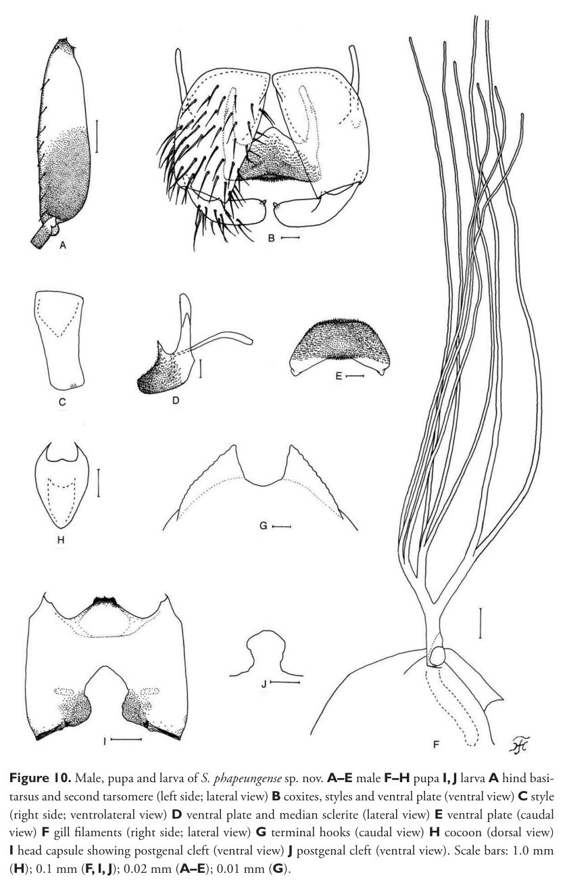

Species › Simulium › Gomphostilbia
Simulium phapeungense
| Classification | Genus Simulium, subgenus Gomphostilbia |
|---|---|
| Status | valid |
| Distribution | Thailand (Mae Hong Son and Nan) (Takaoka et al. 2020) |
| Thailand | Type locality: Pha Peung, Muang District, Mae Hong Son Province, 1,034 m, 19°36'58.5"N 97°59'48.2"E, 12-VII-2017; also Nan (Takaoka et al. 2020, pp. 85-88) |
| Diagnostic notes | S. asakoae species-group (COI subgroup IV). Female unknown. Male: brown upper-eye (large) facets in 11 vertical columns and 13 horizontal rows, head slightly wider than thorax, 1st antennal flagellomere 1.5-1.6x 2nd (vs 1.8-1.9x in S. sutheppuiense and S. maelanoiense), hind basitarsus 1.2x hind femur. Pupa: abdominal tergites 1-2 without minute tubercles (vs present in S. loeiense), terminal hook outer/inner margin 2.0-2.9 (couplet 12a). Larva: abdominal segments 1, 3 and 4 grey (and 5 light grey) with segment 2 light ochreous (Takaoka et al. 2020, pp. 85-88). |
| Sources | Takaoka et al. 2020 |
How it keys out
The chain of characters leading to this taxon in each key (a ready-made diagnosis).
Thailand: Simulium asakoae species-group (males) (Takaoka et al. 2020) – couplet 15b
- 1b Hair tuft of base of radial vein yellow
- 2b Upper-eye (large) facets medium to dark brown
- 4b Antenna brownish except scape, pedicel and base of first flagellomere yellowish
- 5b Hind basitarsus 1.0–1.3 times as wide as hind femur (Fig. 4C)
- 11b Upper-eye (large) facets in 11 or more vertical columns
- 12a Upper-eye (large) facets in 11 vertical columns
- 13b Head slightly wider than thorax
- 15b First antennal flagellomere 1.5–1.6 times as long as second
Thailand: Simulium asakoae species-group (pupae) (Takaoka et al. 2020) – couplet 12a
- 1b Cocoon with or without anterodorsal bulge or short anterodorsal projection (up to ca. 1.0 mm long) extended at most up to anteroventral tips of cocoon
- 3b Dorsum of abdominal segments 1 and 2 unpigmented or light yellowish
- 5b Dorsum of abdominal segment 1 without minute tubercles
- 7b Cocoon without anterodorsal projection
- 9b Terminal hooks widened, plate-like, with outer margin over 1.5 times length of inner margin, and crenulated
- 10b Stalk of ventral pair thinner than interspiracular trunk
- 11b Gill arranged as (3+3)+2 from dorsal to ventral, with medium-long common basal stalk shorter than interspiracular trunk ⚠
- 12a Outer margin of terminal hook 2.0–2.9 times as long as inner margin ⚠
Thailand: Simulium asakoae species-group (mature larvae) (Takaoka et al. 2020) – couplet 19a
Figures

